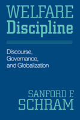

Rethinking the American understanding of poverty, welfare, and the language used to describe them
Rethinking the American understanding of poverty, welfare, and the language used to describe them


 Rethinking the American understanding of poverty, welfare, and the language used to describe them
Rethinking the American understanding of poverty, welfare, and the language used to describe them

|  |
Welfare DisciplineDiscourse, Governance, and GlobalizationSanford F. Schrampaper EAN: 978-1-59213-302-4 (ISBN: 1-59213-302-9) |
"There are few, if any, better guides to the tortuous politics of welfare reform than Sanford Schram. His path-breaking contributions bear comparison to those of Piven and Cloward. I can think of no higher recommendation."
—Jamie Peck, University of Wisconsin-Madison
For the past decade, political scientist Sanford Schram has led the academic effort to understand how Americans and their political officials talk about poverty and welfare and what impact that discourse has on policy and on the global society.
In Welfare Discipline, Schram argues that it is time to take stock of the new forms of welfare and to develop even better methods to understand them. He argues for a more contextualized approach to examining welfare policy, from the use of the idea of globalization to justify cutbacks, to the increasing employment of U.S. policy discourse overseas, to the development of asset-based approaches to helping the poor.
Stressing the importance of understanding the ways we talk about welfare, how we study it, and, critically, what we do not discuss and why, Schram offers recommendations for making welfare policy both just and effective.
"Sandy Schram's Welfare Discipline provides a masterful overview of the key dimensions of recent welfare debates in the U.S.—globalization, gender, race, dependency, and asset-building strategies. He elaborates a powerful critique of current trends in welfare policy and develops a brave alternative based in compassionate liberalism. Welfare scholars will have to contend with this passionately argued book."
—Fred Block, University of California, Davis
"This is a stylish and elegant book whose numerous fresh insights into the politics of welfare retrenchment represent a significant contribution to the existing literature. Persuasive, powerful, and provocative, it should be required reading for all students of welfare state development. One can only hope that it is equally widely read by those who make the policies and shape the discourses it so eloquently dissects."
—Colin Hay, University of Birmingham, UK
"[Schram] critiques current trends in welfare policy and argues for using new approaches in studying welfare policy and governance. The new approach features a compassionate emphasis on reducing harm in order to allow for diversity while building community in an era of globalization."
—The Journal of Sociology and Social Welfare
"[This book] should challenge assumptions about redistributive politics in the United States and advance the study of the welfare state. [It is] particularly ideal for teaching undergraduate or Masters-level policy students"
—Perspectives on Politics
 | Sanford Schram teaches social theory and social policy in the Graduate School of Social Work and Social Research at Bryn Mawr College. He has authored three books and co-edited three others. His first book, Words of Welfare, won the Michael Harrington Award from the American Political Science Association. Schram lives in Haverford, PA, with his wife, Joan. |
Political Science and Public Policy
Sociology
© 2015 Temple University. All Rights Reserved. This page: http://www.temple.edu/tempress/titles/1707_reg.html.